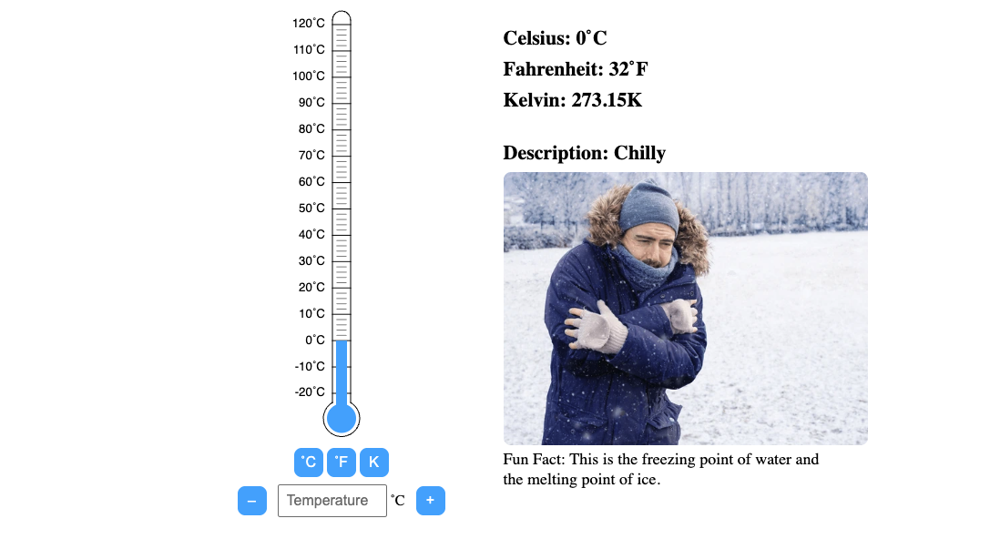

Heat and Temperature
Visit Other Pages

Interactive Thermometer
Experiment with real-time temperature changes and learn how Celsius, Fahrenheit, and Kelvin relate to each other through live conversions.
Visit Site arrow_forwardHeat Transfer Demonstration
Walking at a cold night, you spotted a campsite. A lone stew is at the campfire and when you opened the fire, it warms you up. Why?
Visit Site arrow_forward
Quiz: Test Your Knowledge
Check what you’ve learned, answer questions on temperature, unit conversion, and specific heat capacity.
Visit Site arrow_forward